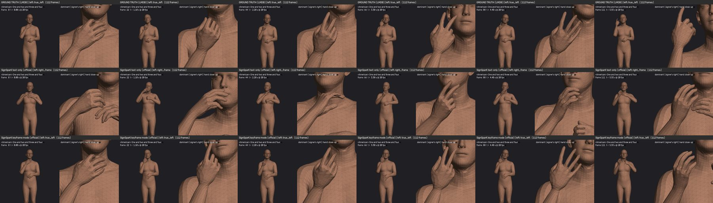
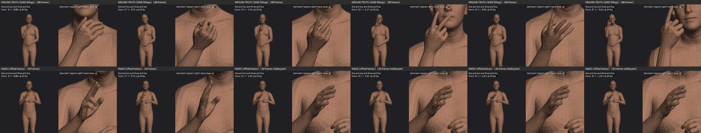
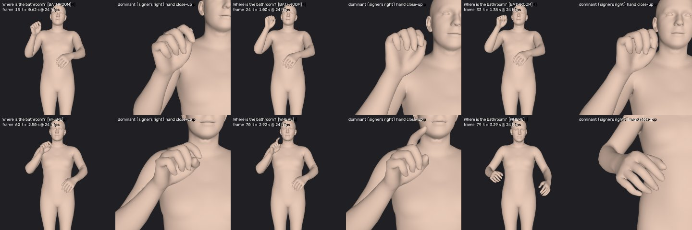

Speech-to-sign project · full overview · 29 Oct 2026
Speech to ASL: what we tested, what failed, and what comes next
We replicated two published text-to-sign models, SignSparK and MaDiS, from their papers and code, including full retraining. This page explains how we did it, how our results compare with the published ones, why neither model produces real ASL signs, and the new approach built from real recorded signs. It ends with three decisions and the expo plan.
Text → sign: failsSignSparKReplicated and retrained with the paper's settings. From text alone it makes smooth motion with no recognisable ASL signs.
Text → sign: weakMaDiSRetrained from scratch (finished 28 Oct). Same quality as the released model. Only a faint trace of a few common signs.
New: real-sign dictionaryWLASL + ASL CitizenEach sign is taken from real signers. 27 signs and 13 demo sentences already built.
Part 1SignSparK
What it is
SignSparK (ECCV 2026, University of Surrey) generates 3D signing (an SMPL-X body with hands) with a flow-matching model. It is trained on real signing videos converted into 3D poses. During training it is shown three keyframes of every sign (start, middle, end) and learns to fill in the motion between them.
Sign videosHow2Sign (ASL), CSL-Daily, PHOENIX
→
3D pose extractionWiLoR (hands), NLF (body) → SMPL-X
→
FAST segmenterfinds where each sign starts and ends
→
Keyframesstart / middle / end of each sign
→
Flow-matching UNetfills in all frames, guided by the sentence
Keyframe mode (KF2P)Sentence plus real keyframes of the signs. The model only fills the gaps.
Text-only mode (T2P)Sentence only. The model must invent every sign. This is the mode speech-to-sign needs.
How we replicated it
Copied the authors' code unchanged into a new git repository and compared it with the paper line by line.
Downloaded the released data (How2Sign, CSL-Daily, PHOENIX; BOBSL is not released) and the released model.
Scored the released model with the paper's metric (SOKE's DTW joint error) and added a "standing still" baseline: the average pose frozen for the whole clip, with no signing at all.
Retrained from scratch with the paper's exact settings: 100,000 steps per model, about 24 GPU hours in total.
Built an independent ASL sign recogniser to check whether the output contains real signs.
Published results vs ours: keyframe mode works
Keyframe mode (lower is better)
Body: paper
Released
Our retrain
Hands: paper
Released
Our retrain
How2Sign (ASL)
1.68
1.21
1.35
2.80
2.10
2.21
CSL-Daily (Chinese)
2.02
1.01
1.15
2.71
1.65
1.70
PHOENIX (German)
1.92
1.23
1.23
2.25
1.94
1.82
Simple interpolation between the same keyframes scores almost as well (How2Sign body 1.24). The keyframes carry the signs.
Published results vs ours: text-only mode fails
Body joint error, text only, How2Sign (lower is better)
Same 200 test sentences for every row. Dashed line: standing still.
Paper claims
6.30
Standing still
7.04
Released model
8.71
Our retrain
8.73
Scale 0–10. The paper's 6.30 is reached only with 1 sampling step, which leaves the body near the average pose. More steps give more motion and a worse score.

"One and two and three and four." Top: real signer counting on the fingers. Middle: SignSparK text only, the hand wanders and never counts. Bottom: SignSparK with real keyframes counts correctly.
Sign recogniser: is the sign for a word in the motion? (0.5 = no trace)
Recogniser trained on 124 WLASL signs; 57% correct on signers it never saw (chance 0.8%).
Real signers
0.655
SignSparK text only
0.507
Scale 0.45–0.70. SignSparK: p = 0.36, no signal.
What is wrong with SignSparK
1
The sentence barely reaches the model.
The whole sentence becomes one averaged vector. Swapping the sentence changes the output only 0.12–0.22× as much as swapping the random noise.
2
It rarely practises text-only generation.
Only about 9% of training has no keyframes. It learns to in-between, not to sign from text.
3
The benchmark cannot see the failure.
Standing still scores better than wrong signing, and the paper reports neither a standing-still baseline nor back-translation for text-only.
4
Paper and code differ.
Different loss weights, an extra loss, 15× more data for the released model. Our retrain with the paper's settings behaves the same, so these do not explain the failure.
Part 2MaDiS
What it is
MaDiS (2026, the SOKE authors) treats signing like a language. A tokenizer turns 3D signing into discrete "sign tokens" (body, left hand, right hand), and a language model (Qwen3, 0.6B parameters) learns to write those tokens from an English sentence.
English sentence
→
Language modelQwen3-0.6B writes sign tokens
→
Sign tokensbody, left hand, right hand
→
Tokenizer decodertokens → SMPL-X motion
How we replicated it
First we tested the released model with the authors' own test code on all 2,308 How2Sign test clips. Then we retrained the whole chain from scratch, in full precision, with the authors' configs on one GPU (gradient accumulation keeps the paper's batch size).
Stage 1: sign tokenizer · 500 epochs, 23–24 Oct
Re-tokenised all data · replaced the released validation/test tokens, which turned out to be noise
Stage 2: language-model pretraining · How2Sign + CSL-Daily + PHOENIX, 24–28 Oct (resumed after GPU timeouts)
Stage 3: fine-tuning on How2Sign · 150 epochs, best at epoch 137, finished 28 Oct
Evaluation · paper metrics (DTW joint error, SiBLEU, SiCLIP), 28 Oct
Published results vs ours
How2Sign test, 2,308 clips
Body error ↓
Hand error ↓
SiCLIP top-1 ↑
SiBLEU body ↑
Paper
6.59
9.45
–
4.41
Released model, our run
6.575
9.414
28.0%
10.9 *
Our retrain from scratch
6.911
9.930
33.4%
18.9 *
Standing still
5.66
9.63
62.6%
–
* Scored against correctly tokenised test data. The paper's 4.41 was scored against the broken released test tokens; with correct references the released model scores 2.5× higher. Most of our retrain's SiBLEU lead comes from producing outputs of the right length, not from better signs.
What this shows: MaDiS is reproducible. Our retrain is within 5% of the released model on joint error and better on retrieval. But standing still still beats it on body error, and even beats real signing on its own SiCLIP evaluator, so these numbers cannot tell correct signs from wrong ones.
Sign recogniser score, released MaDiS (0.5 = no trace)
Compared with real signing in the same 3D format.
Real signers
0.637
MaDiS
0.569
SignSparK
0.507
Scale 0.45–0.70. MaDiS: p = 0.0015. A real but weak trace, mostly for frequent words ("all", "after"). Not visible in single sentences. The same check on our retrained model is still to run.

"One and two and three and four." Top: real signer counts at the chin. Bottom: MaDiS keeps a pointing hand at the chest and stops early. It does not count.
What was achieved with MaDiS
Full from-scratch replication of all three training stages, matching the released model's quality.
Found and fixed broken released data: the validation and test tokens are noise in all three datasets, which made the paper's SiBLEU 2.5× too low.
Showed the metrics are unreliable: standing still beats MaDiS on body error and on SiCLIP.
Clear answer: the wrong signs are a property of the method and data, not of a bad release. Retraining does not fix them. Example: our retrain turns "Nice to meet you." into a single 0.17-second movement.
Part 3Why both models fail
1
They must learn every sign from sentence videos with no sign labels.
How2Sign gives an English sentence and a long video. The model never learns which stretch of motion is which sign, and there are too few examples per word to work it out.
2
The benchmarks reward staying still.
Joint error and the official evaluators give better scores to an average pose than to real but slightly misplaced signing, so the published numbers look good while the signs are wrong.
3
Retraining does not help.
We retrained both models exactly as published. Each matched its released model. The limit is in the approach.
Part 4The new approach: a dictionary of real signs
Instead of generating signs, look them up. Every sign comes from real signers in isolated-sign datasets, converted to the same 3D SMPL-X format, and signs are joined smoothly into a sentence.
The sign sources
Source
Size
Strength
Weakness
ASL Citizen (Microsoft)
~2,700 signs, 52 Deaf signers
Each sign is tied to one ASL-LEX entry; ~31 signers per sign, so the most typical version can be chosen; variants kept apart (HOW1 / HOW2)
Webcam video, so hands are noisier. Research licence, videos stay private
WLASL
~2,000 signs, ~10 signers each
Large, covers most everyday words
Noisy labels: one word may mix several variants; some dead links
3D-LEX
735 usable signs, 1 signer
Motion capture: the cleanest motion, especially the hands
One signer, one variant; 9 of our 23 demo words are broken files
Pipeline
Built once (offline)
Sign videosASL Citizen, WLASL
→
WiLoR + NLFvideo → 3D hands and body (SMPL-X)
→
FAST trimcut to the sign itself
→
Mirrormake every signer right-handed
→
Pick the typical signerone clean version per sign
↓ fills the sign dictionary (3D-LEX mocap used where it is correct)
Every sentence (live)
Speech
→
Whisperspeech → English
→
Glosser (LLM)English → ASL sign list
→
Dictionary lookupone real sign per gloss
→
Smooth joinsSLERP between signs
→
Robotretarget + safety check → Unitree sim
Example: "Where is the bathroom?" → BATHROOM WHERE → two real ASL Citizen signs → one motion.

Built from ASL Citizen: "Where is the bathroom?" Top row: BATHROOM (fist shaken at shoulder height). Bottom row: WHERE (index finger), then back to rest. 95 frames at 24 fps.
What already exists
ASL Citizen: 27 demo signs extracted with WiLoR + NLF, ~31 signers each, the most typical version chosen for each, and 13 demo sentences stitched and rendered.
WLASL prototype: 23 signs, 69 clips. Matched to the right 3D-LEX sign 50% of the time among 14 (chance 7%), better than the older published fits.
Evidence that looked-up signs are readable: on German sign data, stitched dictionary signs back-translate as well as real recordings (BLEU-4 18.9 vs 17.5).
Joining: plain SLERP joins signs as well as SignSparK, with no GPU.
Why this can work
Every sign is a real sign, made by real Deaf signers, so it is correct by construction rather than guessed by a model.
Every sign can be checked one by one before it reaches the robot.
No large training run. The heavy step is extraction: about 37 GPU hours for all of ASL Citizen.
Vocabulary grows by adding signs, about 2,700 from ASL Citizen plus WLASL and 3D-LEX, with fingerspelling for names.
Limits: signs come out in dictionary form, so grammar that changes a sign (verb direction, use of space, facial grammar) is missing. The result is understandable "textbook" ASL, not fluent signing.
Part 5Decision 1: should we break sentences into glosses?
A gloss is the name of one sign, written in capitals (BATHROOM, WHERE). Breaking a sentence into glosses means first turning English into a list of signs in ASL order, then looking up each sign.
Pros
Every sign in the output is a real, checked sign
Works with any dictionary; adding a word means adding one sign
Easy to debug: you can see which sign is wrong
An LLM can produce ASL word order without training
Unknown words can be rephrased (PURCHASE → BUY) or fingerspelled
Cons
Loses ASL grammar that is not a separate sign: verb direction, use of space, classifiers, facial expressions
Glosses have no single standard; one word can map to several sign variants
LLM mistakes in word order or sign choice need a signer to check
Joins between signs look less natural than real sentence signing
Fingerspelling long words is slow on a robot
A second meaning is to cut real signed sentences (How2Sign) into single signs for the dictionary. That gives natural transitions, but How2Sign has no gloss labels, so every cut needs automatic segmentation and naming, and both make mistakes. Fewer and noisier examples per word than ASL Citizen's ~31 clean ones.
Question for you: should the system translate sentences into glosses and look up signs? Our recommendation is yes for the first working system and the expo, keeping isolated signs for the vocabulary, and using sentence data later only to make the joins more natural.
Part 6Decision 2: how to evaluate the signs
Joint-error metrics failed us twice. These checks look at the signs themselves, from strongest to weakest:
Check
What it proves
Cost
1. Sign recogniser on ASL Citizen
Trained on some signers, tested on unseen ones. High accuracy proves the 3D extraction keeps each sign's identity. Run on each sentence, it checks every sign is recognised, in order
~37 GPU hours extraction, then a few hours training
2. Overlay check
Projects the 3D body back onto the video and compares with an independent 2D keypoint detector. Catches bad extraction frame by frame
Low
3. Back-translation
SignSparK's ASL model turns motion back into English. Weak (real data scores only ~20 chrF); good for comparing two versions, not proof of correct signs
Low, already set up
4. Distance to 3D-LEX
For signs both have. Weak at naming the exact sign, good for flagging outliers
Low, already set up
5. Deaf signer review
The real gold standard. No metric replaces it
A person's time
Question for you: which evaluation should we use? Our recommendation: the sign recogniser (1) as the main automatic check, the overlay check (2) to catch extraction errors, and a Deaf signer review (5) on a sample before anything is shown publicly. Back-translation and 3D-LEX distance stay as secondary checks.
Part 7Expo plan
For the expo we will show 3D-LEX signs only, the ones that are correct, performed by the Unitree humanoid in simulation.
3D-LEX mocaponly signs that pass every check
→
Short sentencesbuilt from those signs, joined smoothly
→
ver_02 retargetinghuman motion → robot joints
→
Safety checkcollision fix, MuJoCo gate
→
Unitree simulationshown at the expo
Why 3D-LEX: it is motion capture, so the hands are the cleanest we have and every sign is known to be correct.
What is excluded: broken 3D-LEX files (for example HELLO, THANK YOU, NAME) and any sign that fails a check. Sentences use only words that survive.
Not shown at the expo: SignSparK, MaDiS and the video-extracted dictionary, until the evaluation above confirms them.